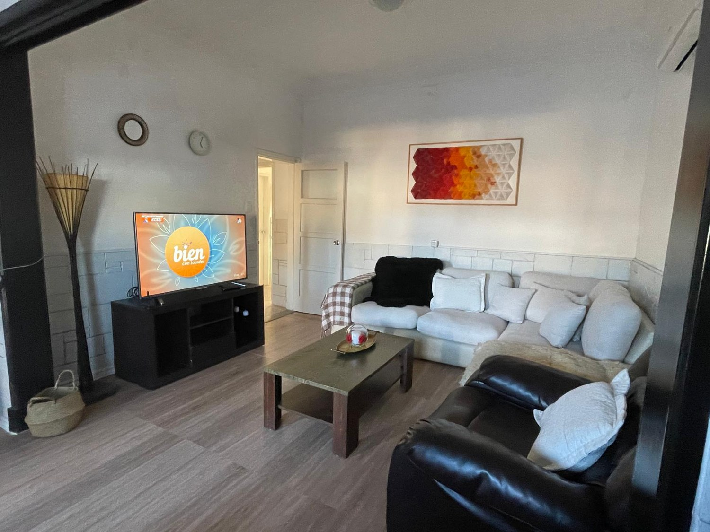

DIRECCIÓN TÉCNICA
Dra. Ana Gabriela Cordone
Gabriela presenta nuestro hogar y la mirada que acompaña el cuidado de las personas mayores. Como directora técnica, supervisa y coordina la atención médica y sanitaria.

PERSONAS QUE CUIDAN A PERSONAS
Un proyecto que une el cuidado profesional con la cercanía de un ambiente familiar.

DIRECCIÓN TÉCNICA
Gabriela presenta nuestro hogar y la mirada que acompaña el cuidado de las personas mayores. Como directora técnica, supervisa y coordina la atención médica y sanitaria.
DIRECTOR DE BRISAS DE MALVÍN
Júpiter nos presenta un proyecto que combina el cuidado profesional con un ambiente familiar, donde cada residente forma parte de una comunidad que valora el respeto, la escucha y el bienestar diario.
NUESTRA FORMA DE CUIDAR
Escuchamos y respetamos los tiempos, preferencias y necesidades de quienes viven en nuestro hogar.
Un trato digno que reconoce la identidad y la historia de cada residente.
Conversaciones cercanas con residentes y familias para acompañar cada etapa.
Presencia cotidiana y oportunidades para compartir y sentirse parte.
UN COMPROMISO COMPARTIDO
Con escucha, paciencia y vocación.
Auxiliares de enfermería, cuidadoras, fisioterapeutas, nutricionista, chef y personal de apoyo acompañan el bienestar cotidiano de nuestros residentes.
ESTAMOS PARA ESCUCHARTE
Conversemos sobre lo que tu familia necesita.
Coordiná una visitaHipólito Yrigoyen 1719
Malvín, Montevideo